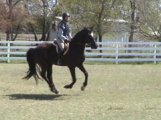

03/28/10
Video of Miaren Training/Jumping
My first time jumping him since I've been
back riding him.
It's rather interesting, because he doesn't
jump like my other horses.
He's so forward and loves long spots.
My trainer doesn't want me interfering
before the jumps, so most times I had
no clue where we were going to take off.
Thuy is forward to his fences, but he
gets much closer and doesn't fly over nearly
as much.
The first video is just us walking and
trotting and working to get him to give to the bit and
try to stay steady. This is an on-going
project, but I didn't want to get too stuck in dressage,
so I put on the jumping saddle to let
him have some 'play time'.
He'd been jumping with Laura, and just
going over the trot cavalletti made a huge difference in
his 'bounce' and enthusiasm. He never
landed from the jumps scooting away, and really only got
strong and fast over the last jump. He
felt a lot faster, because I'm used to kicking a horse all the way to
the jump (well, not Thuy). Jumping Miaren
really got my heart racing and Meg wanted us to
see how we worked together.
The main focus on jumping was getting
me to stay in a more defensive, effective, up right position all the way
to the fence and over. I slowed it down
in the third video, so I can see where I fight to stay upright, but instinctively
duck over the jumps. It's a habit that
I need to keep working on.
In the second lesson on Nero, it proved
portent. We took a jump, he hit it, got the pole between his front legs,
and went down after the fence. Even with
the forward momentum, I didn't go off while he floundered and got back
up.
Meg cleared out the broken jump, put it
back up, and boy was Nero more careful. At least he learns.
So, on to Miaren.
